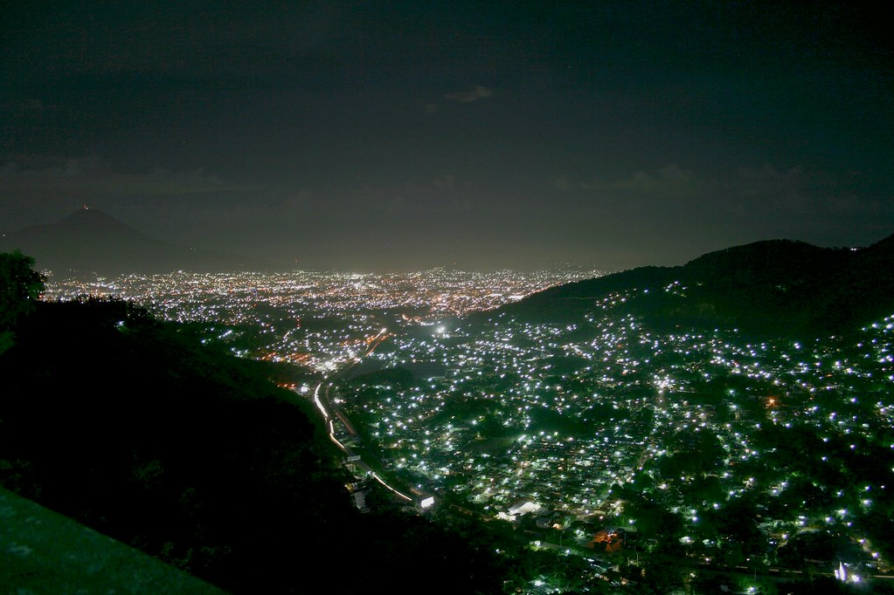
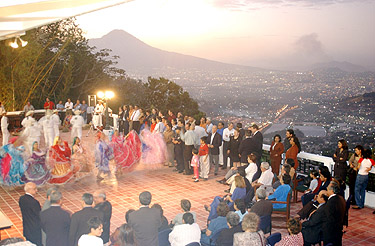
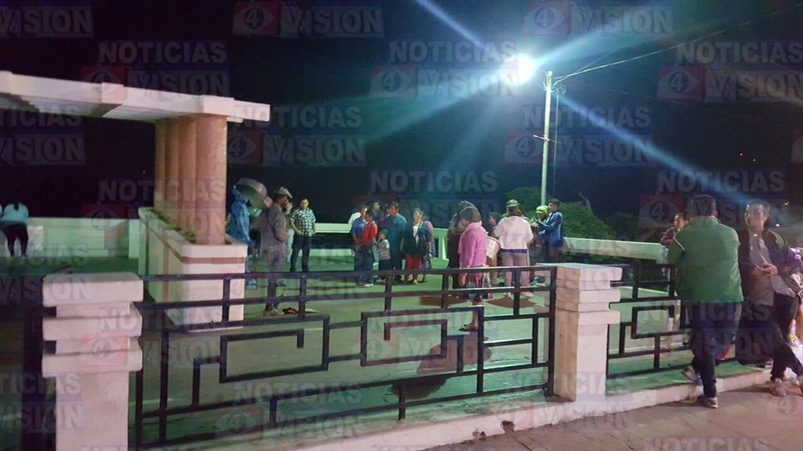

Es uno de los lugares donde nacionales y extranjeros se dan cita, especialmente los fines de semana; por su clima muy fresco, para saborear la comida
típica salvadoreña y por las vistas desde el sur de la ciudad.
El Mirador se ha convertido en un popular sitio de esparcimiento familiar, desde ahí puede apreciarse la mayor parte de la ciudad de San Salvador y de
varios municipios aleñados, además en la zona abundan las tradicionales “pupuserías”, que ofrecen el popular platillo salvadoreño; y muchos grupos tocan música
local o “andina” a cambio de algunas monedas. Es un sitio infaltabale para tomarse una fotografía de recuerdo de su visita a la capital.
|  |  |  |
Si quieres informacion acerca del lugar y registrarte a una de nuestros recorridos, usa el enlace de abajo para registrate.
Nosotros nos pondremos en contacto contigo!
-------->Reserva tu cupo <--------